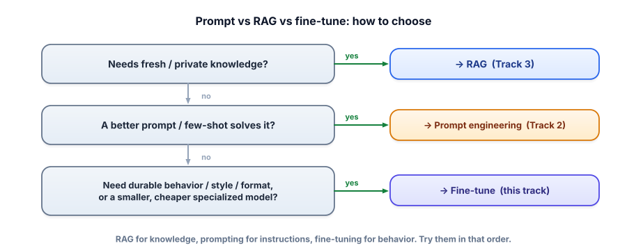

Prompt vs RAG vs fine-tune
Fine-tuning sounds like the “serious” option, so people reach for it first — and usually shouldn’t. Knowing exactly when fine-tuning is the right tool (and when prompting or RAG wins) is one of the clearest markers of an experienced GenAI engineer. Let’s build that judgment before we build a model.
Three ways to change what a model does
You now have three levers. Prompting (Track 2) changes the input — instant, free, great for instructions and one-offs. RAG (Track 3) changes the input too, by injecting retrieved knowledge — perfect for facts that are large, private, or changing. Fine-tuning changes the weights — you continue training the model on your examples so a behavior becomes baked in. Each is the right answer to a different question.
Fine-tuning is further training a pretrained model on your own examples, updating its weights so it reliably produces a desired behavior — a format, a style, a tone, or strong performance on a narrow task. Unlike prompting and RAG (which change the input at run time), fine-tuning changes the model itself, once, ahead of time.

What fine-tuning is (and isn’t) for
| Fine-tune when you want… | Don’t fine-tune for… |
|---|---|
| A consistent format/style/tone hard to get with prompting alone | Fresh or changing facts → that’s RAG (re-index, don’t retrain) |
| Reliable performance on a narrow, repeated task | A one-off task a good prompt already handles |
| A smaller/cheaper/faster model to match a big one on your task | Adding private documents as knowledge → that’s RAG |
| To shrink your prompt (bake in instructions/examples you currently pay for every call) | When you haven’t tried prompting + RAG yet |
Should you fine-tune?
Answer three questions; get a recommendation with the reasoning.
These aren’t mutually exclusive. A common production stack is fine-tune + RAG: fine-tune the model to follow your format and tone reliably, and use RAG to feed it current facts. Fine-tuning fixes how it answers; RAG supplies what it knows. Reach for both when you need both.
- Prompting & RAG change the input; fine-tuning changes the weights.
- RAG for knowledge, prompting for instructions, fine-tuning for behavior — try them in that order.
- Fine-tune for consistent format/style/tone, narrow repeated tasks, or a smaller cheaper model.
- Don’t fine-tune for fresh/changing facts (RAG) or one-offs (prompt).
- Fine-tuning and RAG often combine: behavior from fine-tuning, knowledge from RAG.
A bank wants an assistant that (a) always answers in a strict, compliant format and tone, and (b) uses the latest, frequently-updated policy documents. Best approach?
Your model needs your company's current prices, which change weekly. Best approach?
1. For each, pick prompt / RAG / fine-tune (or a combo): (a) answer support questions from our docs, (b) always output our exact JSON ticket schema, (c) write in our brand’s quirky voice, (d) summarize a pasted email.
2. Your prompt is 2,000 tokens of instructions + 8 examples, sent on every call, and it’s getting expensive. How might fine-tuning help?
3. Why is “fine-tune it on our knowledge base” usually the wrong instinct?
▸ Show solutions & reasoning
1. (a) RAG — knowledge from docs. (b) fine-tune (or strong prompt + JSON mode) — a durable format behavior. (c) fine-tune — a consistent style. (d) prompt — a one-off transformation of provided text. Notice (b) and (c) are behaviors, (a) is knowledge, (d) is an instruction — matching the three-tool map.
2. If those instructions and examples are baked into the weights by fine-tuning, you can drop most of them from the prompt — the model already behaves that way. You pay a one-time training cost to stop paying 2,000+ tokens on every single call, which at volume can be a large, ongoing saving in cost and latency. Fine-tuning to shrink the prompt is an underrated, very practical use.
3. Because knowledge bases change, and weights are expensive and slow to update — you’d be retraining constantly, and the model still couldn’t cite sources or guarantee it isn’t blending facts. Worse, fine-tuning on documents teaches style more than reliable recall; models don’t store facts as crisply as a retriever does. For knowledge, retrieval is both cheaper and more trustworthy. Fine-tune behavior; retrieve knowledge.
Fine-tuning carries costs prompting and RAG don’t: you need a curated dataset (the hard part), compute to train, an evaluation to prove it helped, and a pipeline to version and deploy the result — and every base-model upgrade may mean re-tuning. That’s why the discipline is “prompt and RAG first”: they’re reversible, instant to iterate, and require no training. Fine-tuning earns its cost when a behavior is stable, valuable, and high-volume enough that baking it in pays off — and when you can measure the improvement (Lesson 5.6).
One powerful pattern worth knowing: distillation. You use a large, expensive model to generate high-quality examples for your task, then fine-tune a small, cheap model on those examples — “teaching” the small model to imitate the big one on your narrow task. Done well, you get most of the big model’s quality at a fraction of the cost and latency, which is exactly the “smaller/cheaper specialized model” cell in the table.
It’s how many teams turn an expensive prototype into an affordable production model. But notice it still obeys the rule: you’re fine-tuning for behavior (match the teacher on this task), not stuffing in changing facts. Keep the map in your head and the right tool is almost always obvious.
To use fine-tuning well, you need a feel for what “training” actually does to a model. Let’s demystify it — gently, with a runnable toy. Next: how training actually works.